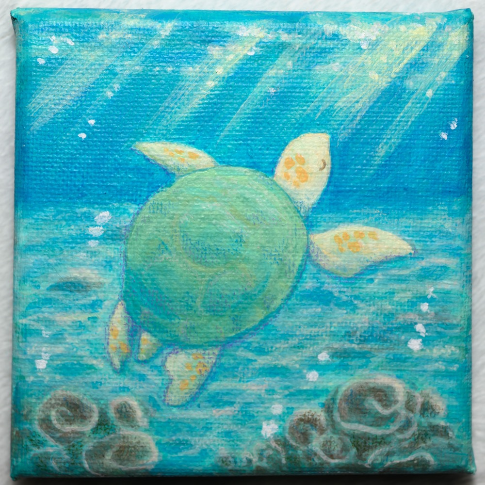
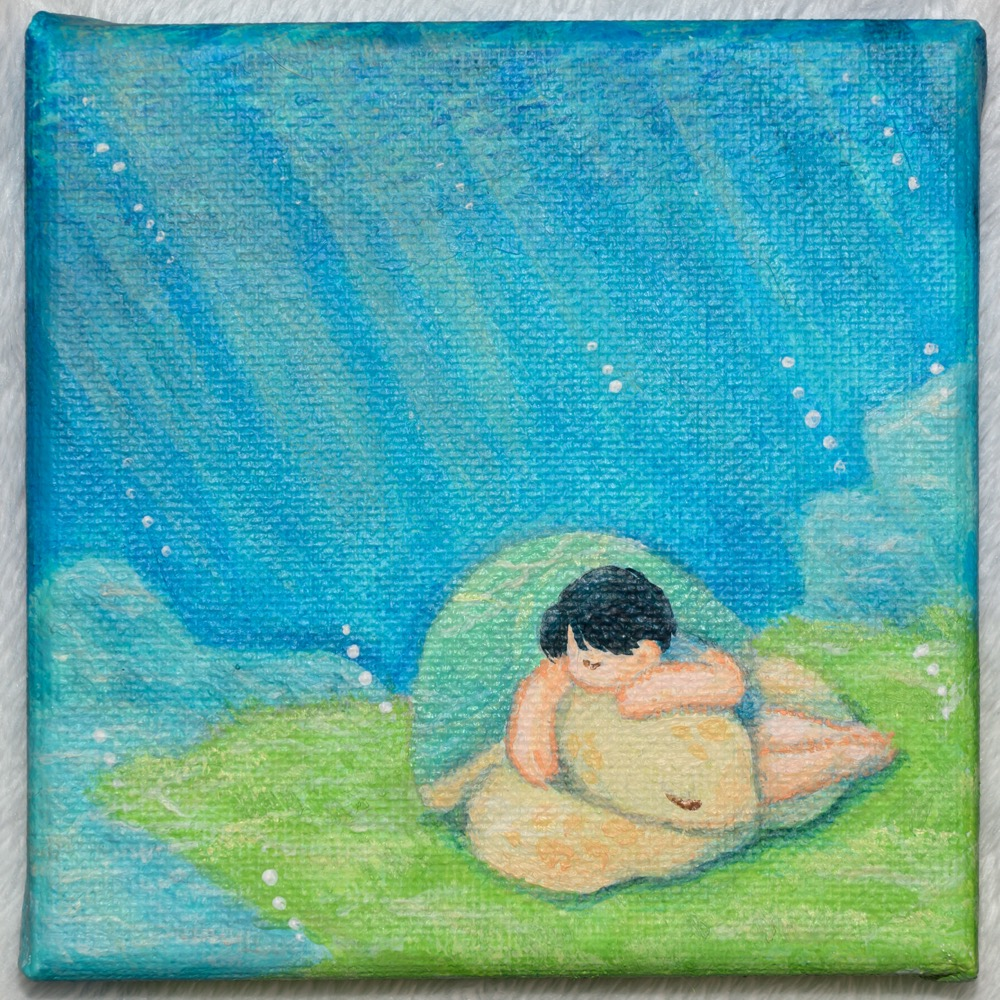
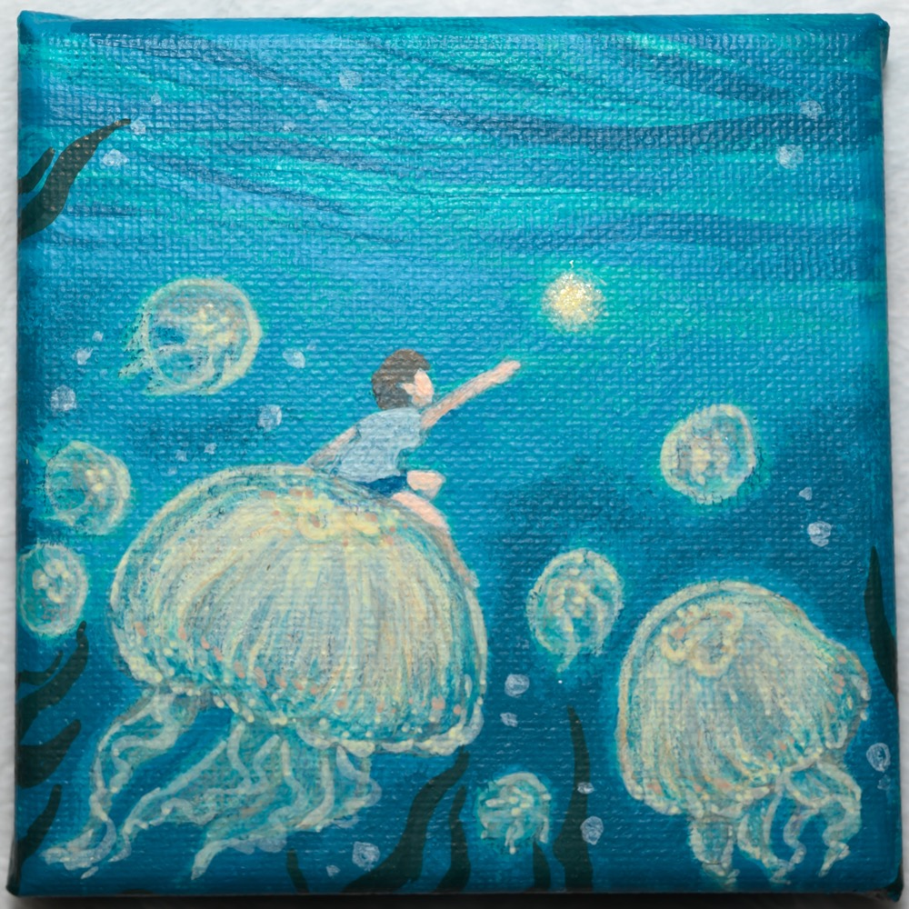

NYH를 위한 감성 갤러리
꿈결 조각 모음
NYH's Artwork는 바다, 해파리, 돌고래와 별빛 같은 상징을 따라 마음의 풍경을 그려내는 온라인 전시 공간입니다. 화면 안을 천천히 흐르는 장면들을 따라가다 보면, 작가가 지나온 시간과 감정의 결을 함께 마주하게 됩니다.
- 바다
- 꿈
- 별빛
- 위로


갤러리
작품 아카이브
바다, 해파리, 돌고래와 별빛처럼 화면 안에 오래 머무는 장면들 가운데 몇 작품을 먼저 소개합니다. 전체 작품과 시리즈별 흐름은 하위 갤러리 페이지에서 이어서 감상할 수 있습니다.
작가 소개
그림으로 다시 자신을 만나기 시작한 남영희
남영희는 디지털 일러스트를 통해 자신의 감정과 기억을 천천히 그려내는 작가입니다. 사회복지학을 전공했지만, 이미지 작업을 계기로 그림의 길에 들어섰고, 독학과 실무 경험을 지나며 자신만의 화면을 만들어 왔습니다.
오랜 공백 끝에 다시 그림을 시작한 순간, 작업은 작가에게 일기와 거울, 그리고 조용한 위로가 되었습니다. 인스타그램에 하루 한 장의 그림을 올리며 이어온 시간은 결국 다시 삶을 움직이게 한 작은 빛이 되었습니다.
바다, 해파리, 돌고래와 별빛은 그녀의 화면 안에서 마음의 언어가 됩니다. 남영희의 그림은 바닷속을 유영하듯 조용히 흘러가며, 보는 이가 자신의 꿈과 감정을 가만히 들여다볼 수 있는 작은 풍경이 되어 줍니다.
작품 세계
작품을 이루는 장면들
바다
바다는 작가에게 주어진 환경이자 모든 장면을 감싸는 커다란 배경입니다. 화면 안의 존재들은 그 흐름 속을 천천히 지나가며, 삶의 시간과 마음의 결을 함께 품고 있습니다.

해파리
해파리는 유연한 마음의 상징입니다. 물결을 거스르기보다 흐름에 몸을 맡기며 움직이는 모습은, 흔들리면서도 다시 나아가는 마음의 형태를 닮아 있습니다.

돌고래
돌고래는 무한한 애정을 상징합니다. 화면 속에서 인물을 감싸고 함께 머무는 존재로 나타나며, 따뜻한 위로와 다정한 관계의 감각을 조용히 전합니다.